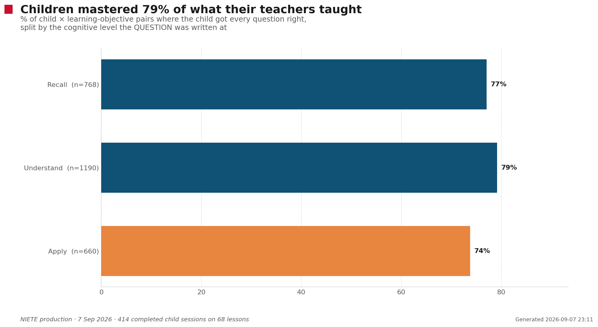
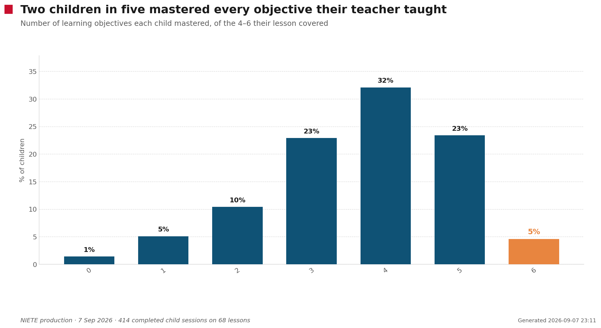
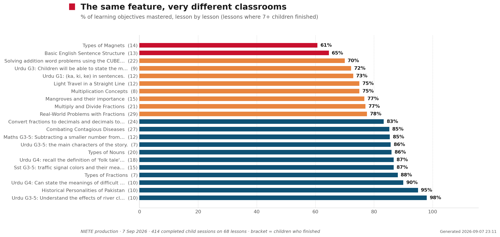
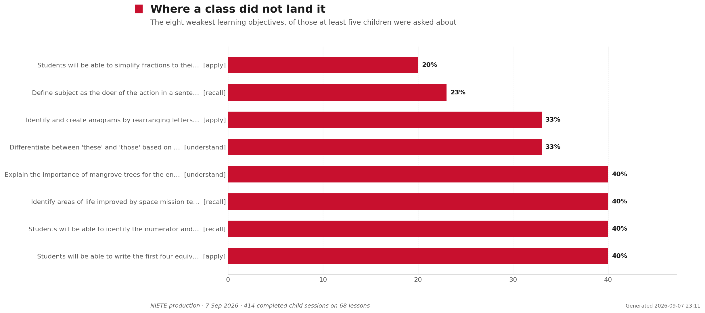
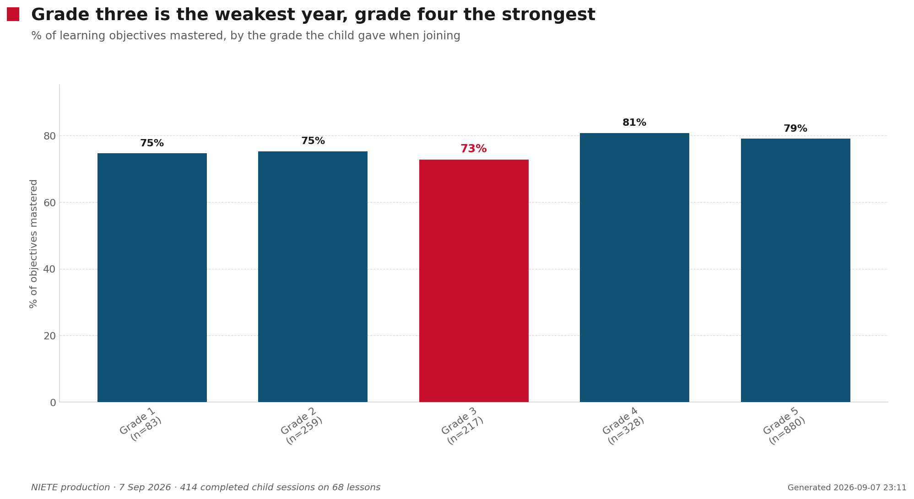
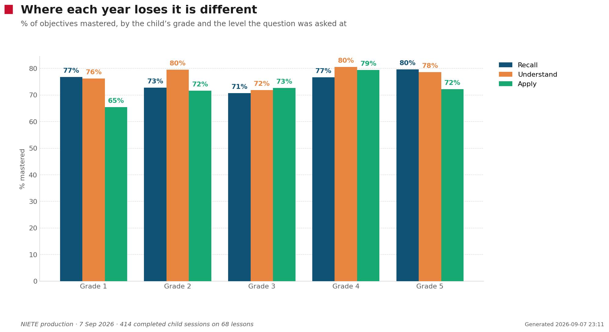
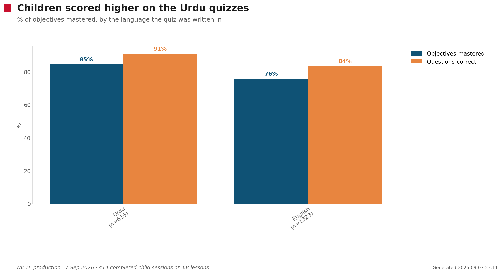
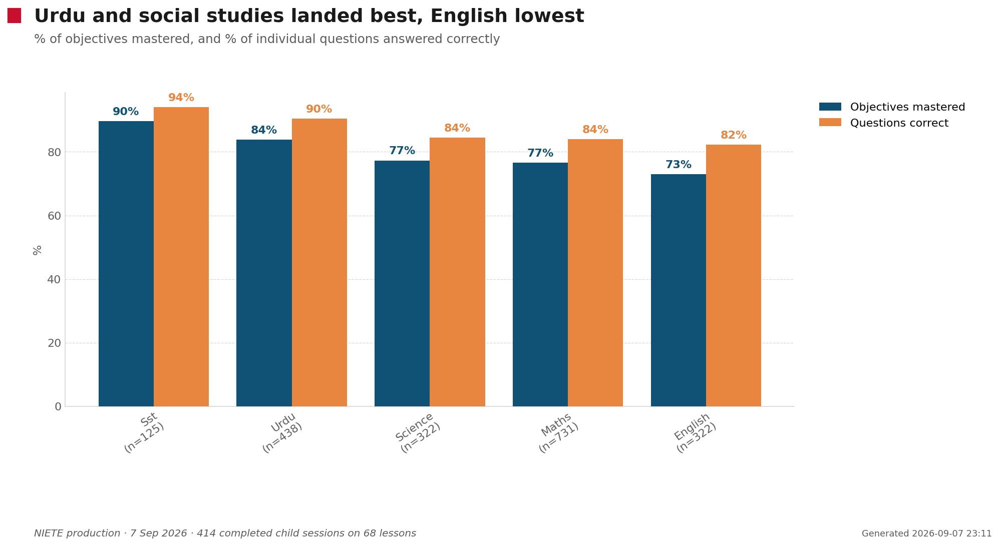

Every quiz here was written from a real lesson recording: the teacher taught,
the system read the transcript back, listed the objectives the lesson actually covered, and
asked the children about those objectives — not about a syllabus.
135 quizzes sent to teachers68 reached a child534 children answered414 finished all eight questions7 September 2026
78.6%
of the objectives children were asked about, they mastered — meaning they got
every question on that objective right. Across 1938 child-and-objective
pairs from 414 finished quizzes.
Question by question the figure is higher — 85.9% of
individual questions were answered correctly, and the median child scored
88.0%. The stricter reading is the useful one: a child who misses one of
the two questions on fractions as parts of a whole has not mastered it, even though
their score still looks good.
Apply questions are the ones children lose
Every question is written at a level — remembering a fact, understanding an
idea, or applying it to something new. Questions that ask a child to apply come back
six points below the rest.

Level the question was asked at
Child × objective pairs
Mastered
Questions correct
Recall
768
77.1%
85.3%
Understand
1190
79.2%
87.0%
Apply
660
73.8%
84.5%
Sorted by the level the teacher taught at, the picture is flatter and
less tidy: apply is still last, but recall sits just below understand rather than above it.
The level a question is pitched at predicts how children do; the level the lesson reached
does not, at least not on one day of data.
Level the teacher taught at
Pairs
Mastered
Questions correct
Recall
598
79.1%
85.2%
Understand
674
80.7%
87.9%
Apply
666
76.0%
84.3%
Two children in five mastered everything their teacher taught
And only two children out of 414 mastered none of it. The
shape is a class doing well with a tail that needs another pass — not a class that missed the
lesson.

Lesson by lesson
The spread between classrooms is far wider than any subject or language
difference. The chart shows every lesson where seven or more children finished; the cards
below cover every lesson three or more finished.

What each class was taught, and how they did
Every lesson that reached a child, with the objectives the system read out of
that lesson's recording. The bar under each objective is the share of that class who got every
question on it right.
Real-World Problems with Fractions
Maths · grade 5 ·
quiz in English ·
29 children finished
77.6% of objectives mastered
recall26/29
Identify the numerator and denominator in a fraction
understand23/29
Explain the method for multiplying fractions
apply19/29
Find a fraction of a given quantity
apply26/29
Use LCM to add fractions
apply20/29
Convert an Improper Fraction to a Mixed Fraction
apply21/29
Apply addition and multiplication of fractions to solve real-world problems
Combating Contagious Diseases
Science · grade 3-5 ·
quiz in English ·
27 children finished
85.2% of objectives mastered
recall25/27
Identify COVID-19 and Polio as contagious diseases.
understand23/27
Explain how COVID-19 and Polio spread.
understand18/27
Describe preventive measures against COVID-19 and Polio.
understand24/27
Define 'vaccine' and explain its role in preventing diseases.
recall25/27
Define 'pathogen' as a microorganism that causes disease.
Convert fractions to decimals and decimals to fractions
Maths · grade 3-5 ·
quiz in English ·
24 children finished
83.3% of objectives mastered
apply12/24
Convert a fraction to a decimal
apply23/24
Convert a decimal to a fraction
apply20/24
Convert a fraction to a decimal by changing its denominator to 10, 100, or 1000
apply22/24
Write a decimal as a fraction according to its place value (10th, 100th)
apply23/24
Simplify a fraction
Solving addition word problems using the CUBES strategy
Maths · grade 3-5 ·
quiz in English ·
22 children finished
70.0% of objectives mastered
apply10/22
Identify the numbers in a word problem by circling them.
apply19/22
Identify the question in a word problem by underlining it.
apply17/22
Identify the action word in a word problem by boxing it to determine the operation (e.g., 'total' means addition).
apply13/22
Evaluate the word problem by extracting relevant information and organizing it for solving.
apply18/22
Solve addition word problems by applying the CUBES strategy and performing addition with carrying over tens and hundreds.
Multiply and Divide Fractions
Maths · grade 3-5 ·
quiz in English ·
21 children finished
77.1% of objectives mastered
recall21/21
Students will be able to recall the rules for multiplying fractions.
understand18/21
Students will be able to understand the use of reciprocal for dividing fractions.
apply12/21
Students will be able to convert mixed fractions into improper fractions.
apply11/21
Students will be able to solve problems involving division of fractions.
apply19/21
Students will be able to simplify fractions to their simplest form.
Types of Nouns
English · grade 5 ·
quiz in English ·
20 children finished
86.0% of objectives mastered
understand15/20
Define and give examples of Proper Nouns
understand17/20
Define and give examples of Common Nouns
understand15/20
Define and give examples of Countable Nouns
understand20/20
Define and give examples of Uncountable Nouns
understand19/20
Define and give examples of Collective Nouns
اردو گرامر اور الفاظ (نظر ثانی)
Urdu · grade 4 ·
quiz in Urdu ·
18 children finished
86.7% of objectives mastered
recall15/18
Students can recall the definition of 'folk tale' and provide an example.
understand17/18
Students can understand the meanings of key vocabulary words from the 'Chinese Folk Tale' lesson and construct sentences using them.
understand16/18
Students can understand the rules of syllable division (arkan sazi) and break down difficult words to read them.
understand15/18
Students can differentiate between simple and compound sentences and provide examples of both.
understand15/18
Students can understand the definition of 'related words' (grohi alfaaz / mutalazim alfaaz) and list words associated with a given term.
حفاظتی اور احتیاطی تدابیر
Sst · grade 3-5 ·
quiz in Urdu ·
15 children finished
86.7% of objectives mastered
recall14/15
Identify traffic signal colors and their meanings.
understand14/15
Explain the importance of using a footpath while walking on the road.
understand8/15
Describe the correct procedure for crossing a road using Zebra Crossing.
recall15/15
Identify safety measures to be taken while traveling in a vehicle.
recall14/15
Recall the emergency call number for traffic assistance.
Mangroves and their importance
English · grade 3 ·
quiz in English ·
15 children finished
76.7% of objectives mastered
recall13/15
Identify the characteristics of mangrove trees.
understand6/15
Explain the importance of mangrove trees for the environment and living beings.
understand12/15
Discuss the threats to mangrove trees and ways to protect them.
apply15/15
Commit to protecting all trees, not just mangroves, for a healthy environment.
Types of Magnets
Science · grade 5 ·
quiz in English ·
14 children finished
60.7% of objectives mastered
recall7/14
Students will be able to define Permanent Magnet and Temporary Magnet.
understand9/14
Students will be able to describe the difference between Permanent Magnet and Temporary Magnet.
recall8/14
Students will be able to give an example of a Temporary Magnet.
recall10/14
Students will be able to state the direction of a magnetic compass needle.
Basic English Sentence Structure
English · grade 2 ·
quiz in English ·
13 children finished
64.6% of objectives mastered
recall9/13
Identify the subject, verb, and object in a given English sentence.
recall3/13
Define subject as the doer of the action in a sentence.
recall8/13
Define verb as the action in a sentence.
recall10/13
Define object as the receiver of the action in a sentence.
apply12/13
Construct a grammatically correct English sentence by arranging jumbled subject, verb, and object.
subtraction (Subtraction) ادھار لے کر
Maths · grade 3-5 ·
quiz in Urdu ·
12 children finished
85.4% of objectives mastered
recall11/12
Subtracting a smaller number from a larger number
understand9/12
Borrowing to subtract a larger digit from a smaller digit
apply11/12
Solving subtraction problems by arranging numbers in 1s, 10s, 100s, 1000s order
apply10/12
Decreasing the previous digit after borrowing
Light Travel in a Straight Line
Science · grade 4 ·
quiz in English ·
12 children finished
75.0% of objectives mastered
understand10/12
Explain that light travels in a straight line.
understand9/12
Describe the formation of a shadow and the effect of object position on its size.
recall8/12
State the definition of energy and identify its various forms.
حروف اضافت
Urdu · grade 1 ·
quiz in Urdu ·
12 children finished
72.9% of objectives mastered
recall8/12
Identify حروف اضافت (ka, ki, ke) in sentences.
understand11/12
Differentiate the usage of کا and کی based on gender (مذکر/مونث) of the noun.
apply7/12
Apply the correct حروف اضافت (کا, ki, ke) in given sentences.
understand9/12
Use کے as حروف اضافت for plural nouns (جمع).
ماحولیاتی آگاہی اور صفائی
Urdu · grade 3-5 ·
quiz in Urdu ·
10 children finished
98.0% of objectives mastered
understand10/10
Understand the effects of river cleanliness on human health and the environment.
understand10/10
Understand the feelings expressed by the poet through the river's lament.
recall9/10
Identify practical steps to save the environment.
understand10/10
Describe methods of water and energy conservation to save the environment.
understand10/10
Understand the importance of spreading environmental awareness.
Historical Personalities of Pakistan
Sst · grade 3-5 ·
quiz in English ·
10 children finished
95.0% of objectives mastered
understand9/10
Define historical personalities
recall10/10
Describe the key achievements of Sir Syed Ahmed Khan
recall10/10
Describe the key achievements of Begum Ra'ana Liaquat Ali Khan
understand9/10
Explain the Two Nation Theory
چینی لوک داستان
Urdu · grade 4 ·
quiz in Urdu ·
10 children finished
90.0% of objectives mastered
recall8/10
Can state the meanings of difficult words.
apply9/10
Can create sentences using given words.
understand10/10
Can derive moral lessons from the story.
understand9/10
Can understand the main idea of the story.
آگاہی مہم
Urdu · grade 3 ·
quiz in Urdu ·
9 children finished
72.2% of objectives mastered
recall6/9
Children will be able to state the meanings of given words.
apply4/9
Children will be able to perform syllabification of given words.
apply8/9
Children will be able to make sentences using given words.
understand8/9
Children will be able to understand the harms of environmental pollution.
Multiplication Concepts
Maths · grade 3 ·
quiz in English ·
8 children finished
75.0% of objectives mastered
apply8/8
Students will be able to find the total number of items given in groups using multiplication without counting each item individually.
understand4/8
Students will be able to understand multiplication as continuous addition.
apply6/8
Students will be able to use different methods to solve two-digit and three-digit multiplication problems.
understand6/8
Students will be able to differentiate between multiplication and division, specifically that multiplication increases the quantity while division decreases it.
Types of Fractions
Maths · grade 4 ·
quiz in English ·
7 children finished
88.1% of objectives mastered
recall7/7
Define a fraction as 'a part of a whole'.
recall6/7
Identify the components of a fraction: numerator and denominator.
recall7/7
Define a Proper Fraction as one where the numerator is smaller than the denominator.
recall7/7
Define an Improper Fraction as one where the numerator is greater than or equal to the denominator.
recall6/7
Define a Mixed Fraction as a combination of a whole number and a proper fraction.
apply4/7
Identify the type of a given fraction (Proper, Improper, or Mixed).
چینی لوک داستان
Urdu · grade 3-5 ·
quiz in Urdu ·
7 children finished
85.7% of objectives mastered
recall7/7
Identify the main characters of the story.
understand7/7
Describe key events in the story's plot.
understand4/7
Extract the moral lesson from the story.
recall7/7
Define simple sentences and provide examples.
recall5/7
Define compound sentences and identify them.
apply6/7
Identify related concepts from given words.
حروف جار اور حروف عطف
Urdu · grade 3 ·
quiz in Urdu ·
6 children finished
88.9% of objectives mastered
recall6/6
Identify Huroof Jar (prepositions).
recall5/6
Identify Huroof Aatif (conjunctions).
apply6/6
Use Huroof Jar (prepositions) in sentences.
apply5/6
Use Huroof Aatif (conjunctions) in sentences.
recall5/6
Define Huroof Jar (prepositions).
recall5/6
Define Huroof Aatif (conjunctions).
الفاظ کے معنی اور مرکب الفاظ
Urdu · grade 3-5 ·
quiz in Urdu ·
6 children finished
87.5% of objectives mastered
understand5/6
Explain the meanings of words such as 'khala' (space), 'wadi' (valley), 'sayyara' (planet), 'shehar basana' (to settle a city), 'biaban' (wilderness), and 'atish fishan' (volcano).
understand6/6
Define compound words and provide examples.
apply6/6
Form sentences using words such as 'khala', 'baz', 'wadi', 'sayyara', 'shehar basana', 'biaban', and 'atish fishan'.
understand4/6
Explain the Earth's rotation around the sun and its effect on day and night.
Word Jumble Challenge and Demonstrative Pronouns (This, That, These, Those)
English · grade 5 ·
quiz in English ·
6 children finished
54.2% of objectives mastered
apply2/6
Identify and create anagrams by rearranging letters of a given word to form a new word without adding or changing letters.
understand4/6
Differentiate between 'this' and 'that' based on the proximity of a single object.
understand2/6
Differentiate between 'these' and 'those' based on the proximity of multiple objects.
recall5/6
Identify the plural forms of 'this' (these) and 'that' (those).
بیج سے پودا کیسے بنتا
Science · grade 1-2 ·
quiz in Urdu ·
5 children finished
88.0% of objectives mastered
understand4/5
Students will be able to describe the process of a seed growing into a plant.
recall5/5
Students will be able to identify the necessary factors for growing a plant.
understand4/5
Students will be able to describe the characteristics of a sunflower plant.
recall4/5
Students will be able to list the benefits of plants.
apply5/5
Students will be able to practically demonstrate how to grow a plant from a seed at home.
Boys and Girls Can Do It All
English · grade 3-5 ·
quiz in English ·
5 children finished
85.0% of objectives mastered
recall4/5
Identify the meanings of new vocabulary words from the text.
apply5/5
Match vocabulary words with corresponding pictures.
recall4/5
Answer comprehension questions based on the story 'Boys and Girls Can Do It All'.
apply4/5
Identify and apply adjectives to describe objects and their colors.
Namira Saleem: Pakistani Astronaut
Science · grade 3-5 ·
quiz in English ·
5 children finished
80.0% of objectives mastered
recall5/5
Identify Namira Saleem as the first Pakistani female astronaut.
understand3/5
Explain why Pinky joined Namira's classes.
understand5/5
Explain the importance of labels on a spacecraft.
recall2/5
Identify areas of life improved by space mission technology.
understand5/5
Describe the function of an oxygen tank and main engine start in a spacecraft.
Multiplication Word Problems
Maths · grade 3-5 ·
quiz in English ·
5 children finished
70.0% of objectives mastered
recall4/5
Identify a word problem by recognizing its story-telling format.
apply3/5
Solve multiplication word problems by identifying given information, what needs to be found, and applying multiplication as repeated addition.
apply3/5
Perform multiplication of 3-digit numbers by 1-digit numbers.
apply4/5
Perform multiplication of 4-digit numbers by 1-digit numbers.
Fractions
Maths · grade 3-5 ·
quiz in English ·
5 children finished
56.0% of objectives mastered
apply2/5
Students will be able to write the first four equivalent fractions of a given fraction.
apply1/5
Students will be able to simplify fractions to their lowest form.
apply4/5
Students will be able to compare two fractions when their denominators are the same.
recall2/5
Students will be able to identify the numerator and denominator.
understand5/5
Students will be able to differentiate between proper and improper fractions.
Addition Word Problems
Maths · grade 2 ·
quiz in English ·
4 children finished
62.5% of objectives mastered
apply4/4
Students will be able to solve addition word problems using given clue words.
apply2/4
Students will be able to perform addition of two or three-digit numbers, including problems with carrying over.
recall2/4
Students will be able to identify the clue word 'Total' in addition word problems.
understand2/4
Students will be able to identify key data in addition word problems by underlining the given information.
نظام شمسی کے الفاظ
Urdu · grade 3-5 ·
quiz in Urdu ·
4 children finished
62.5% of objectives mastered
recall2/4
Identify new vocabulary related to the solar system and state their meanings
apply4/4
Read Urdu text with correct pronunciation and fluency
recall1/4
Name the planets of the solar system
recall3/4
Identify the planet closest to the sun
Division of Three-Digit Numbers
Maths · grade 3 ·
quiz in English ·
4 children finished
58.3% of objectives mastered
recall1/4
Identify the terms 'divisor' and 'remainder' in a division problem.
understand3/4
Understand that the remainder must always be smaller than the divisor.
apply3/4
Apply the concept of division to solve problems involving three-digit numbers divided by one-digit numbers.
Fossil Fuels and Pollution
Science · grade 6-8 ·
quiz in English ·
4 children finished
37.5% of objectives mastered
recall2/4
Define fossil fuels and provide examples.
recall3/4
Identify the main gas released from burning fossil fuels.
understand1/4
Explain the Greenhouse Effect.
understand0/4
Define global warming and explain its relation to greenhouse gases.
Profit and Loss Word Problems
Maths · grade 3 ·
quiz in English ·
3 children finished
83.3% of objectives mastered
recall1/3
Identify important numbers and questions in a word problem by circling numbers and underlining questions.
apply3/3
Calculate the total cost of items when given the number of items and the cost per item.
recall3/3
Define 'profit' as 'منافع' (gain).
apply3/3
Calculate the profit by subtracting the total cost from the selling price.
حروفِ جار اور حروفِ عطف
Urdu · grade 3-5 ·
quiz in Urdu ·
3 children finished
80.0% of objectives mastered
understand1/3
Define Haroof-e-Jarr (prepositions) and identify them.
apply3/3
Identify Haroof-e-Jarr (prepositions) in sentences.
understand3/3
Define Haroof-e-Atf (conjunctions) and identify them.
apply3/3
Identify Haroof-e-Atf (conjunctions) in sentences.
recall2/3
Define Ism (noun) and Fail (verb).
گفتگو اور میٹنگ کے آداب
Urdu · grade 2 ·
quiz in Urdu ·
3 children finished
66.7% of objectives mastered
recall2/3
Students will be able to recall the meanings of words.
understand2/3
Students will be able to understand the etiquettes of conversation.
apply2/3
Students will be able to form words by joining syllables.
Parts of Speech: Noun, Verb, Adjective
English · grade 3-5 ·
quiz in English ·
3 children finished
25.0% of objectives mastered
recall1/3
Identify nouns in a given sentence by asking 'Who is doing the action?' or 'What is it?'
recall1/3
Identify verbs in a given sentence by asking 'What is happening?' or 'What is the action?'
recall0/3
Identify adjectives in a given sentence by asking 'What kind?' or 'What type?'
understand1/3
Differentiate between nouns, verbs, and adjectives in simple English sentences.
And 23 more lessons that one or two children opened
Too few answers each to read on their own, but they are part of every figure
above.
Lesson
Class
Children
Objectives mastered
Computational Thinking and Problem Solving
Science · grade 9-10
1
100.0%
Converting Fractions to Decimals
Maths · grade 5
1
100.0%
How to prevent the spread of germs / How to prevent
Science · grade 3-5
1
100.0%
اسم کی اقسام
Urdu · grade 5
1
100.0%
ویک ڈیز
Science · grade 1-2
1
100.0%
پیغام رسانی کے ذرائع
Urdu · grade 3-5
1
100.0%
محترمہ فاطمہ جناح
Sst · grade 3-5
2
90.0%
Daily Routine and Good Manners
English · grade 1
1
80.0%
Digital Learning Tools
English · grade 3-5
1
80.0%
Rethink, Reuse, Recycle
Science · grade 3-5
1
80.0%
چوہے کا روزنامچہ
Urdu · grade 3-5
1
80.0%
Parts of Speech and Verb Tenses
English · grade 5
2
75.0%
ارکان سازی
Urdu · grade 2
2
75.0%
Fractions
Maths · grade 4
1
75.0%
Separating Mixtures
Science · grade 6-8
1
75.0%
قدرتی وسائل اور صفائی; ارکان سازی
Urdu · grade 5
1
75.0%
نظم کا مرکزی خیال
Urdu · grade 3-5
1
75.0%
گروہی الفاظ اور مائنڈ میپ
Urdu · grade 4
1
75.0%
Story Elements and Vocabulary
English · grade 3-5
2
62.5%
Word Opposites and Synonyms
English · grade 3
2
62.5%
ویک ڈیز
Science · grade 1-2
1
60.0%
Vocabulary and Sentence Construction
English · grade 4
1
33.3%
ڈیوائیڈ
Maths · grade 3
1
33.3%
Where a class did not land it
The weakest objectives, of those at least five children were asked about.
Two are worth a teacher's attention on their own: simplify fractions to their lowest
terms, where one child in five got there, and define the subject as the doer of the
action, which thirteen children were asked and three answered — a definition, not a
difficult idea, which usually means the class heard it once at the end.

Mastered
Objective
Taught at
Lesson
Children
20%
Students will be able to simplify fractions to their lowest form.
apply
Fractions
5
23%
Define subject as the doer of the action in a sentence.
recall
Basic English Sentence Structure
13
33%
Identify and create anagrams by rearranging letters of a given word to form a new word without adding or changing letters.
apply
Word Jumble Challenge and Demonstrative Pronouns (This, That, These, Those)
6
33%
Differentiate between 'these' and 'those' based on the proximity of multiple objects.
understand
Word Jumble Challenge and Demonstrative Pronouns (This, That, These, Those)
6
40%
Explain the importance of mangrove trees for the environment and living beings.
understand
Mangroves and their importance
15
40%
Identify areas of life improved by space mission technology.
recall
Namira Saleem: Pakistani Astronaut
5
40%
Students will be able to identify the numerator and denominator.
recall
Fractions
5
40%
Students will be able to write the first four equivalent fractions of a given fraction.
apply
Fractions
5
Grade by grade
Every child types their own class when they join, so this is the grade the
child gave — not the band the system guessed from the recording. Sections (4B, 5 Green) are
discarded; only the grade compares across classrooms. Readable for
377 of the 414 children who finished.

Grade
Child × objective pairs
Mastered
Questions correct
Grade 1
83
74.7%
85.6%
Grade 2
259
75.3%
84.3%
Grade 3
217
72.8%
83.6%
Grade 4
328
80.8%
87.5%
Grade 5
880
79.1%
85.3%
Splitting each year by the level its questions were pitched at shows the years
are not weak in the same way. Grade 1 holds up on remembering and understanding and falls off a
cliff on apply. Grade 3 is flat and low across all three — nothing in particular is
going wrong, which usually means something general is. Grade 4 is the only year that holds
near 80% at every level.

Grade
Recall
Understand
Apply
Grade 1
76.7% n=30
76.1% n=46
65.4% n=26
Grade 2
72.7% n=132
79.5% n=166
71.6% n=81
Grade 3
70.7% n=75
71.8% n=103
72.6% n=73
Grade 4
76.6% n=124
80.5% n=205
79.3% n=92
Grade 5
79.6% n=334
78.5% n=567
72.1% n=330
One thing worth fixing in the product rather than the analysis: 37 of the
children who finished typed something into the class box that is not a class — their own name,
mostly (“Wahaj”, “Name Meerab Fatima”). The field takes free text and never checks it.
Subject and language
Urdu quizzes came back nine points above English ones, a gap that widened as
the evening's numbers came in. Worth watching rather than concluding from: the Urdu quizzes sit
in different grades and subjects, so language and content are not separable yet. Social studies
and Urdu lead by subject; English trails.


Subject
Pairs
Mastered
Questions correct
Maths
731
76.6%
84.0%
Urdu
438
83.8%
90.4%
English
322
73.0%
82.2%
Science
322
77.3%
84.4%
Sst
125
89.6%
94.0%
How much weight this carries
One day, 414 children, 68 lessons.
The headline held at 79% as the sample grew from 103 children to 414,
which is a good sign. Per-lesson figures still rest on a handful of children each — treat a
single lesson's number as a conversation starter with that teacher, not a measurement.
The children are self-selected. They are the ones whose parents opened
a WhatsApp link on the day. Nothing here says what the rest of the class knows.
Nobody was watching them answer. A quiz taken at home can be taken with
help.
The objectives are the machine's reading of the lesson, taken from the
transcript — an accurate summary of what was said, not a curriculum document the teacher
signed off.
85% of questions correct is a high ceiling. If it holds as numbers grow,
the questions may be pitched slightly easy — that is a tuning question for the next week of
data, and it would push the mastery figure down, not up.